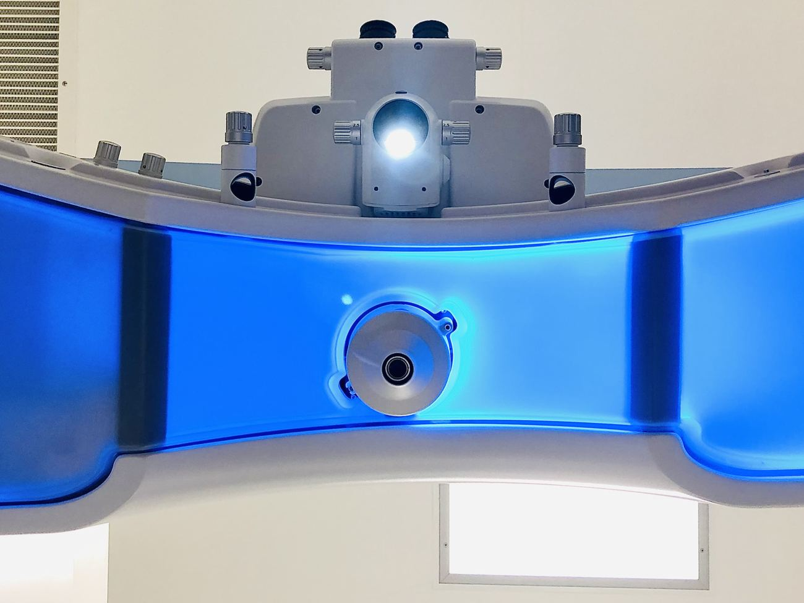
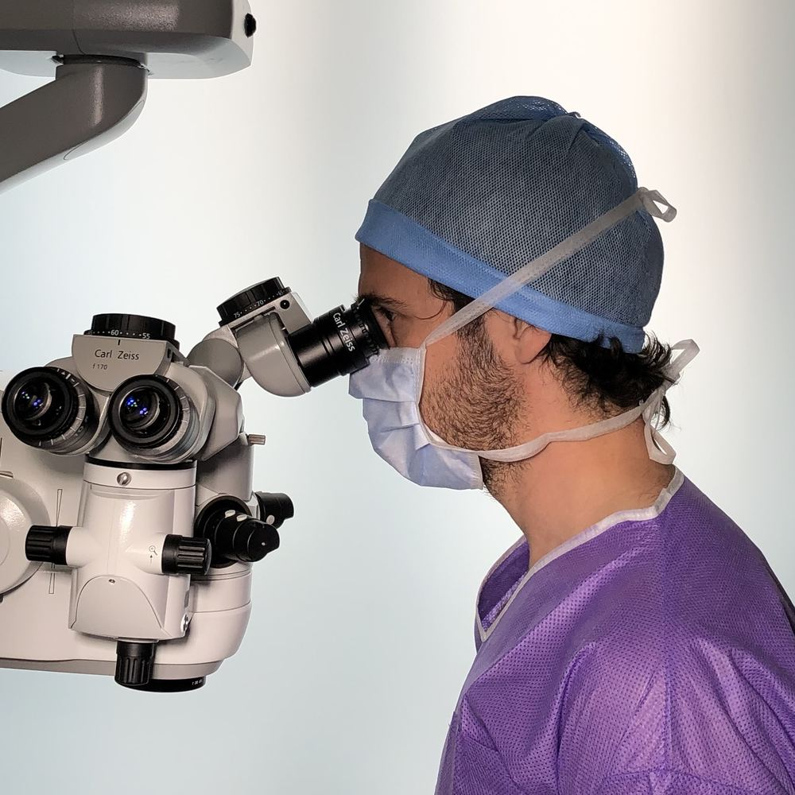
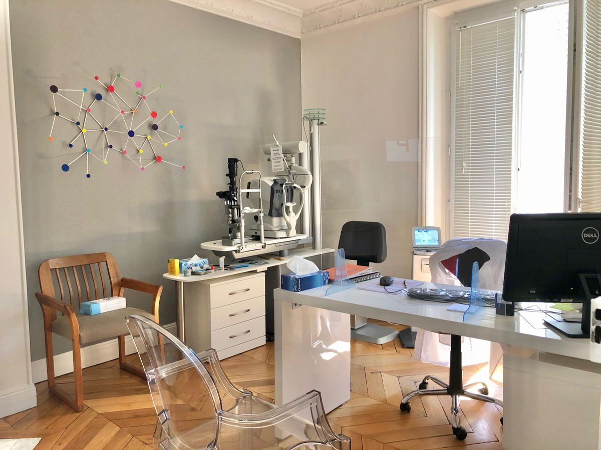

Le SMILE est la technique que le Dr Stopek privilégie. Le bilan au cabinet confirme si elle vous convient.
Le Dr Stopek est l'un des pionniers du SMILE en France depuis 2013.

Le Dr Stopek vous précisera les techniques auxquelles vous êtes éligibles, et vous guidera dans votre choix.
Certains patients, bien que myopes, ne sont pas éligibles au SMILE. Source : dr-stopek.fr/smile
Le bilan préopératoire est effectué au cabinet. Il précise les techniques possibles. Selon le bilan, d'autres techniques peuvent être proposées (LASIK, PKR).

« Le Docteur STOPEK vous précisera les techniques auxquelles vous êtes éligibles, et vous guidera dans votre choix. »
Plateau technique complet avec le VISUMAX 800, la plateforme qui permet de réaliser le SMILE PRO.
L'intervention dure environ 15 à 20 minutes pour les deux yeux. Source : dr-stopek.fr/smile

67 boulevard de Picpus, Paris 12e. Le suivi est assuré par le Dr Stopek à son cabinet.
6 rue du Dôme, Paris 16e
13 rue Moreau, Paris 12e
Prix et remboursement → · Tout savoir sur le SMILE → · Myopie de l'enfant : la vidéo →
Pour savoir si une chirurgie au laser est possible pour vous, le bilan se fait au cabinet.
Prendre rendez-vous pour un bilan67 boulevard de Picpus, 75012 Paris · 01 43 07 66 00